我的linux终端工具
目录
- 增加中文支持:fbterm + fcitx-fbterm
- 收发邮件:Emacs(GNUS)
- 浏览网页:Emacs(EWW) + w3m
- 文本编辑:Emacs
- 讲稿展示:Emacs(Org)
- 简单的电子表格功能:Emacs(SES)
- 阅读word
- 看视频:mplayer
- 听音乐:Emacs(EMMS + Wangyi-music)
- 看图片/pdf:fbi + fbpdf
- 截图:fbgrab
- 聊天:Emacs(ERC)
- 文件管理:Emacs(Dired)
- GTD:Emacs(ORG)
- 阅读RSS:Emacs(elfeed)
- 听播客:Emacs(podcaster)
- 翻墙:shadowsocks + proxychains
家里有一台老旧的X41笔记本,跑不动X,所以就干脆让它保持在字符终端下了. 不过虽然处于纯文本的环境中,能做的事情倒也不少. 下面就来简单列一下我在linux终端中所用的那些工具.
增加中文支持:fbterm + fcitx-fbterm
linux默认情况下的终端是不能正常显示中文的,而启动fbterm后就能正确显示中文了.
pacman --noconfirm -S fbterm libx86 # 若想使用非根用户运行fbterm，需要把用户加入video组 gpasswd -a $YOUR_USERNAME video # 若想非根用户可使用键盘快捷方式，需要： sudo setcap 'cap_sys_tty_config+ep' /usr/bin/fbterm
不仅如此,fbterm还支持如下功能:
- 使用fontconfig选择字体，和Qt/GTK+上用的应用一样，使用freetype2来绘制字体
- 动态创建和销毁最多10个原生运行默认shell的窗口
- 记录任何窗口的回滚历史
- 自动检测目前本地化环境下的文本内码，支持双字节脚本，比如中文、日文等
- 在线热键切换配置的额外文本内码
- 当gpm服务器运行时，可使用鼠标在窗口间复制和粘贴选择的文本
- 可改屏幕显示方式，比如：屏幕翻转
- C/S结构（客户端/服务器）的轻量级输入法框架
- 背景图片
同样,为了在终端中输入中文,我们需要一款中文输入法,fcitx就是一款linux下很常用的中文输入法,不过为了要与fbterm整合,我们需要安装它的fcitx-fbterm插件:
pacman --noconfirm -S fcitx-fbterm
安装好后，可以通过 fcitx-fbterm-helper -l 启动fbterm与中文输入法
收发邮件:Emacs(GNUS)
GNUS 是Emacs中的一款重量级的邮件管理插件,它不仅仅能收发邮件,还能访问邮件组,只不过访问邮件组的人少了吧.
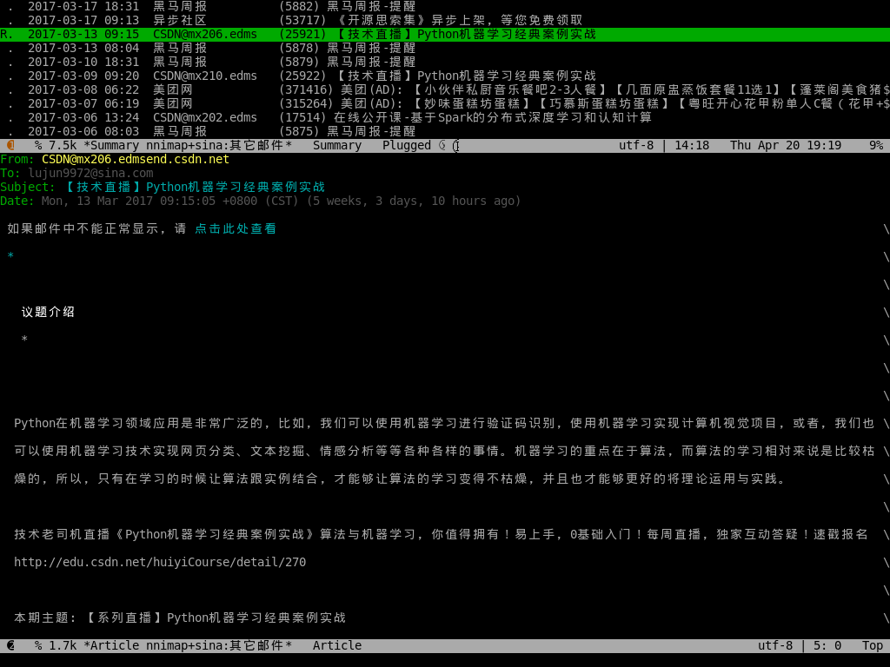
其他选择
- Emacs + smtpmail + Rmail(需要movemail的支持)
- mutt
- notmuch
- alpine
浏览网页:Emacs(EWW) + w3m
Emacs24.4版本开始其实已经自带了一款 EWW 的插件可以作为浏览器来用了
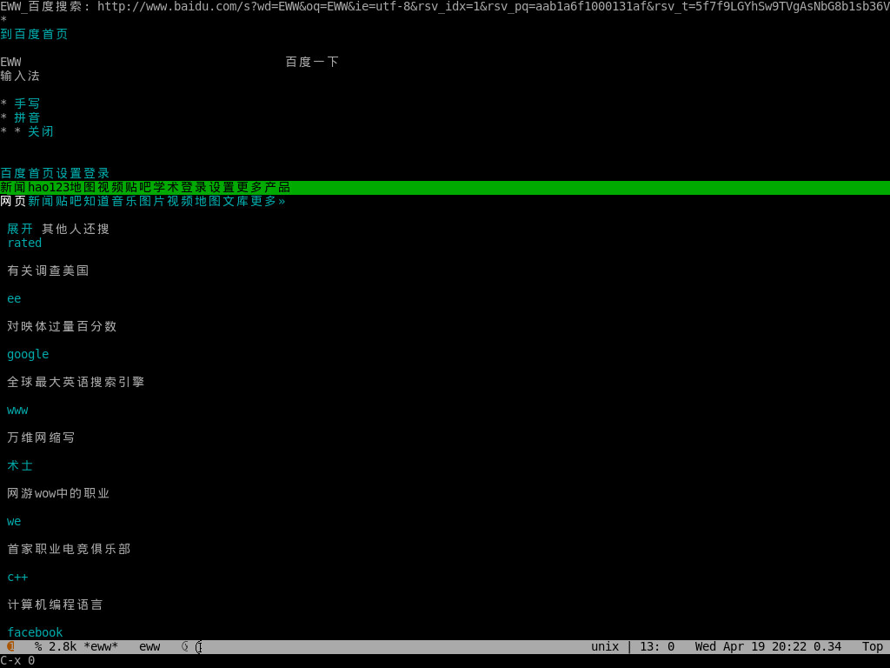
不过在纯文本终端下Emacs无法显示图片,所以有时我还是会用w3m来浏览网页:
pacman --noconfirm -S w3m imlib2
其中安装 imlib2 是为了能让w3m支持显示图片.
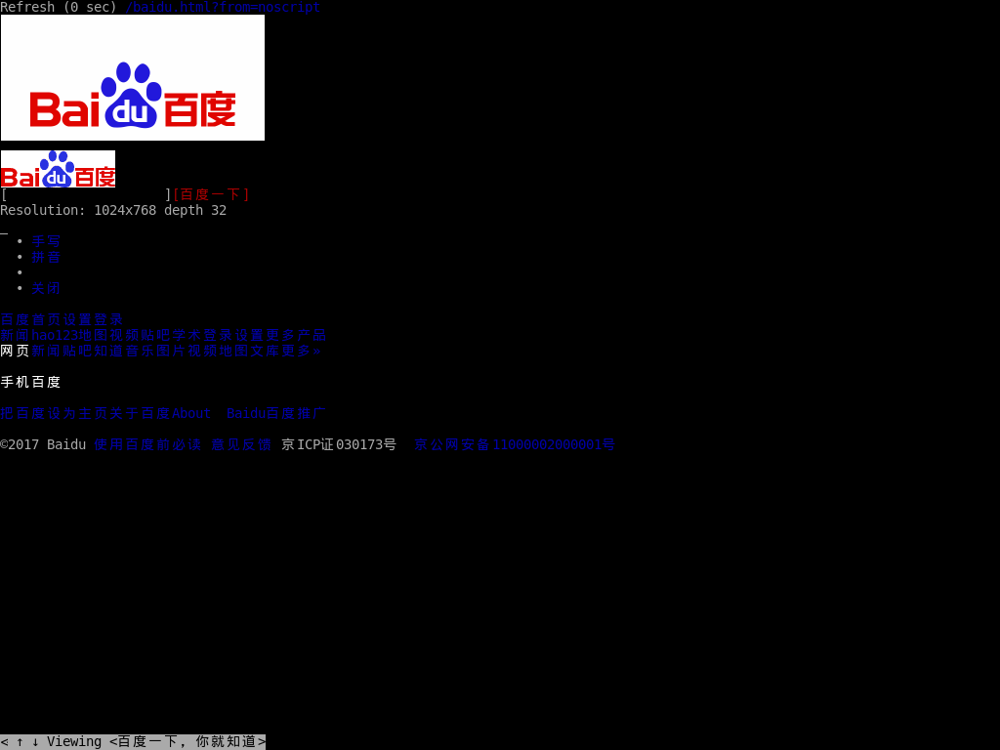
关于 w3m 的使用方法可以参见这里.
其他选择
- Emacs + emacs-w3m(需要w3m的支持)
- lynx
- elinks
文本编辑:Emacs
这还需要解释吗????
其他选择
- vim
简单的电子表格功能:Emacs(SES)
SES是一款简易的电子表格插件,它也支持公式计算,只不过它的公式其实一个Lisp表达式.
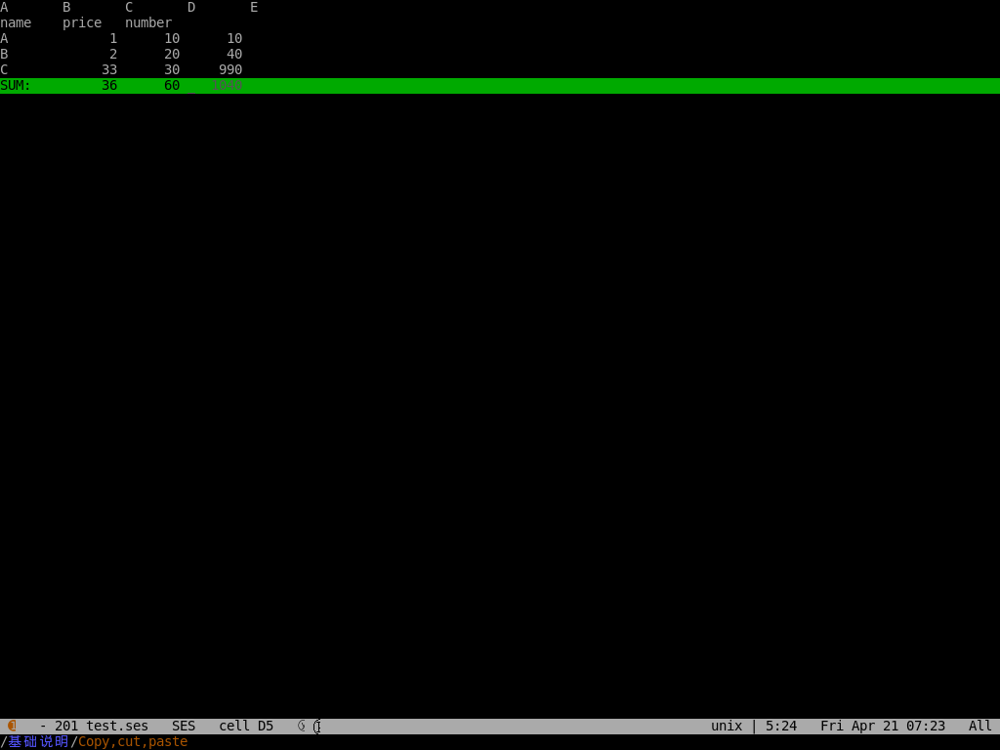
阅读word
antiword,可以在终端环境下阅读msword文档,不过要注意的是, 它只支持doc文件而不支持docx文件
看视频:mplayer
安装mplayer
pacman --noconfirm -S mplayer
mplayer支持在终端环境下播放影片,但是需要指明输出驱动:
mplayer -vo fbdev2 $MEDIA_FILE
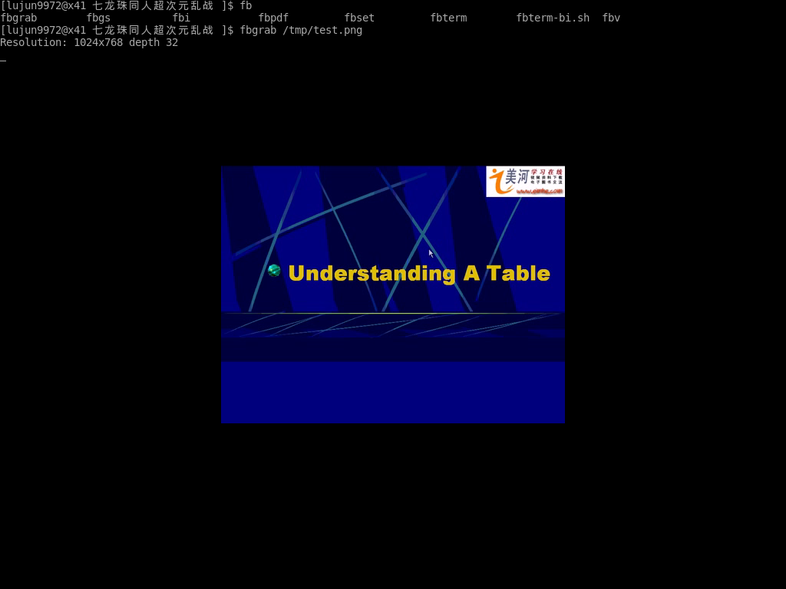
mplayer在播放时支持以下快捷键:
- 左方向键和右方向键
- 分别执行倒退 10 秒和快进 10 秒操作
- 下方向键和上方向键
- 分别执行倒退 1 分钟和快进 1 分钟操作
- 下翻页键和上翻页键
- 分别执行倒退 10 分钟和快进 10 分钟操作
- f
- 当播放视频时，在全屏和窗口模式之间切换。你也可以在命令行中使用 -fs 选项，以便让 MPlayer 开始在全屏模式中播放。
- o
- 在播放视频时切换 OSD（OnScreen Display）模式。
- p 或 Space
- 暂停／继续播放。
- q 或 Esc
- 退出 MPlayer。在 GUI 模式时，Esc 不会退出，仅停止播放。
- / 和 * 或 9 和 0
- 减小或增大音量。
- m
- 静音切换。
- T（通常是 Shift + t）
- 播放窗口置顶切换。
- b 和 j
- 在可用的字幕间循环。
- x 和 z
- 调整字幕的延迟时间。
- I（Shift + i）
- 显示播放电影的文件名称。
- 1 和 2
- 调整对比度。
- 3 和 4
- 调整亮度。
- 5 和 6
- 调整色度。
- 7 和 8
- 调整饱和度
更多的mplayer操作参见 玩转 MPlayer
听音乐:Emacs(EMMS + Wangyi-music)
EMMS 全称Emacs Multimedia System,它能将Emacs打造成一款多媒体平台. 不过它本身并不负责对多媒体文件的播放,而是调用外部程序来实现的.
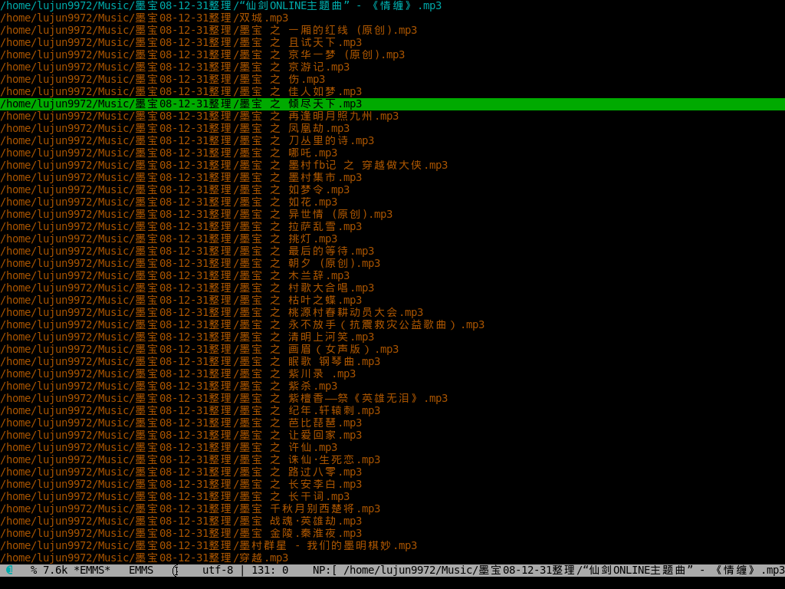
Wangyi-music则是一款Emacs的网易云音乐的客户端插件.
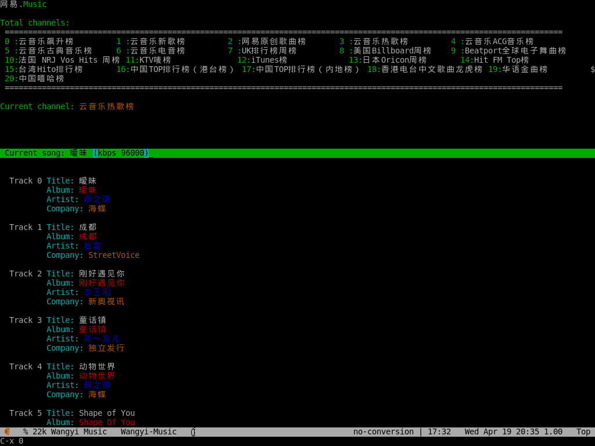
其他选择
- mpg123
- musicbox
看图片/pdf:fbi + fbpdf
fbi与fbpdf都是作为fbida的一部分来安装的.
pacman --noconfirm -S fbida
关于fbi的用法参见:使用fbi在终端查看图片
fbpdf则可以让你在终端下查看pdf
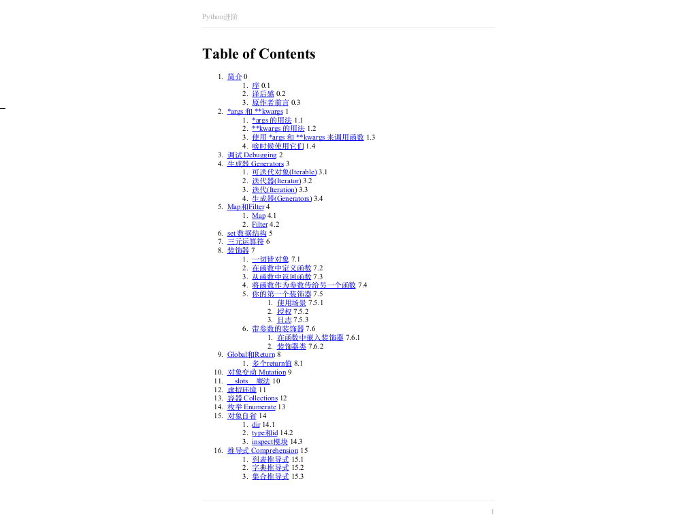
截图:fbgrab
fbgrab会抓取frambuffer device中的屏幕内容并转存为png文件. 事实上这篇博客中的截图很多都是用它来截取的. 它的使用方法也很简单:
fbgrab [options] filename
其中常见的选项有:
- -s n
- 等待n秒后再开始抓图
- -z
- 设定png文件的压缩等级,从0(最快)到9(压缩效果最好)
聊天:Emacs(ERC)
ERC, 全称 emacs irc client,是一款基于Emacs的irc客户端.
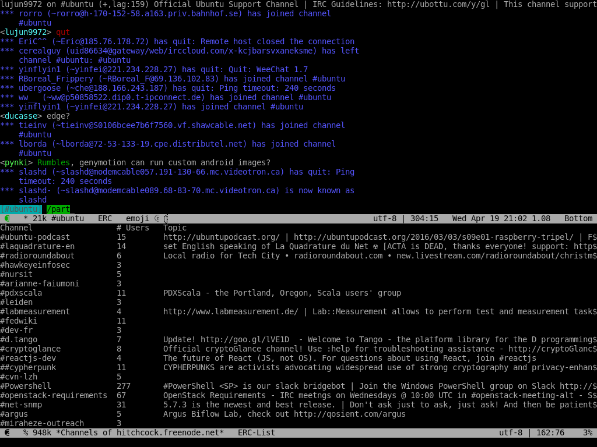
文件管理:Emacs(Dired)
还用说什么呢,用过Emacs的人基本都知道的... 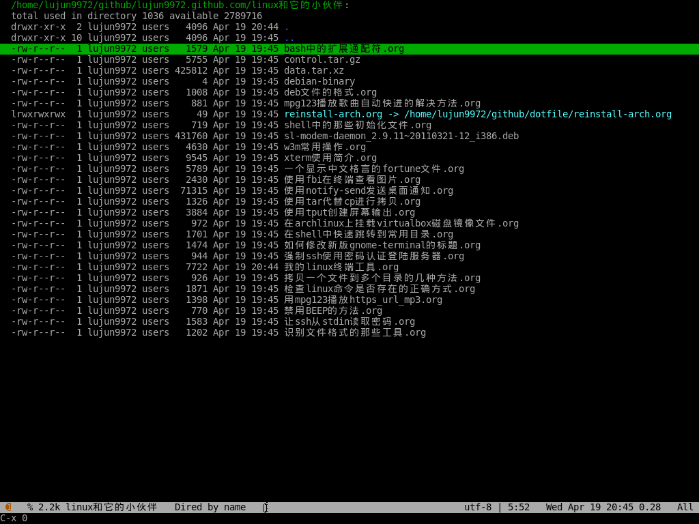 关于Dired的常用操作,请参见:Emacs文件管理神器--dired常用操作说明
GTD:Emacs(ORG)
我觉得也没什么好说的...
其他选择
- calcurse
阅读RSS:Emacs(elfeed)
elfeed 是一款很不错的feed阅览插件,通过elfeed-org插件还能用org来管理feed 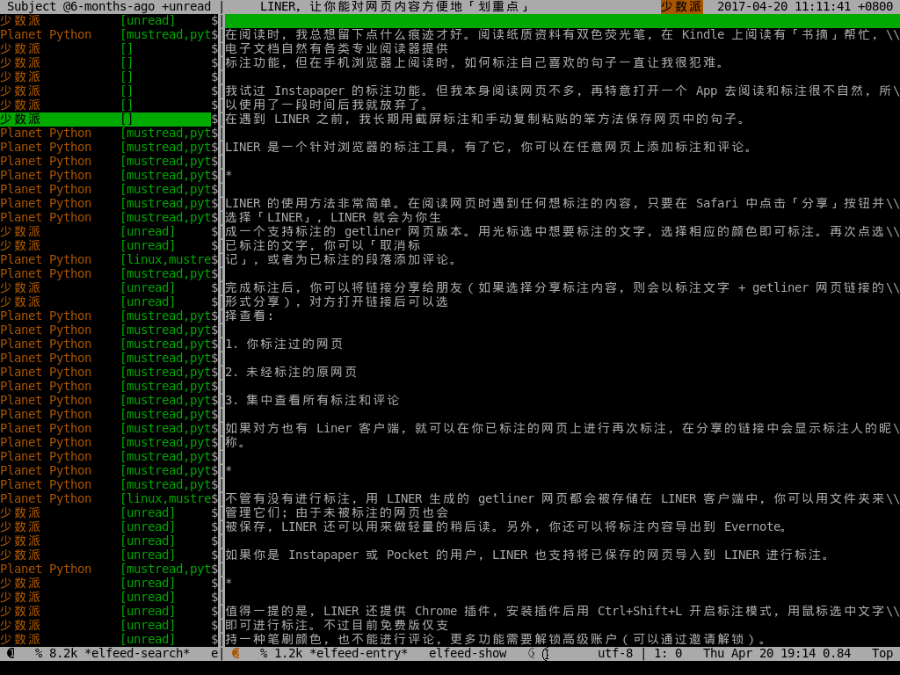
听播客:Emacs(podcaster)
podcaster 是我自己编写的一个Emacs插件,可以实现在线听播客,当然它也需要借助外部程序来播放声音.
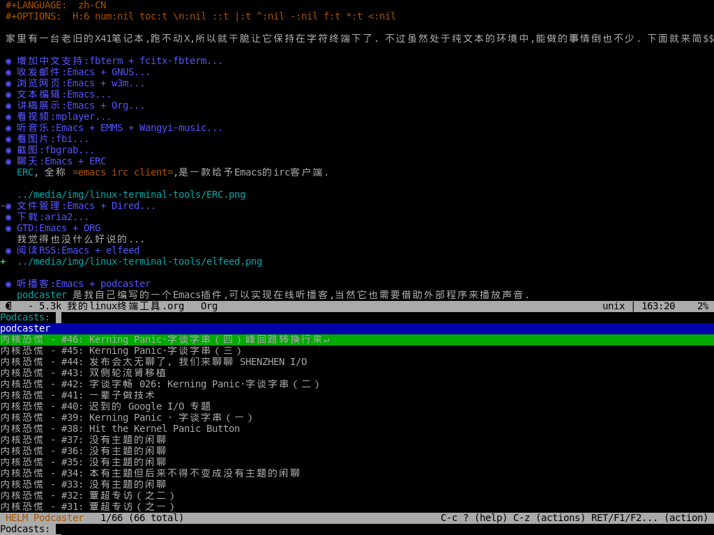
翻墙:shadowsocks + proxychains
shadowsocks这么有名的翻墙软件就不用多说了. 不过它只能提供socks代理. 而w3m又只支持http代理...
好在通过proxychains能够解决这个问题,安装好这个软件后,修改它的配置文件 /etc/proxychains.conf,根据实际内容修改 ProxyList 一节的内容就行了.
要翻墙时只需要
sslock -c /etc/shadowsocks/example.json & # 启动shadowsocks客户端,开启代理 proxychains w3m http://www.google.com # 强制TCPIP链接走代理
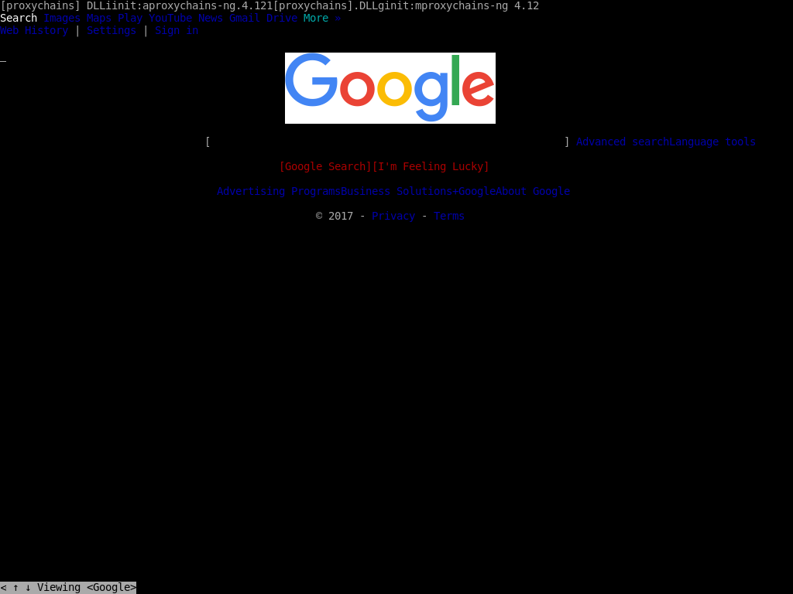